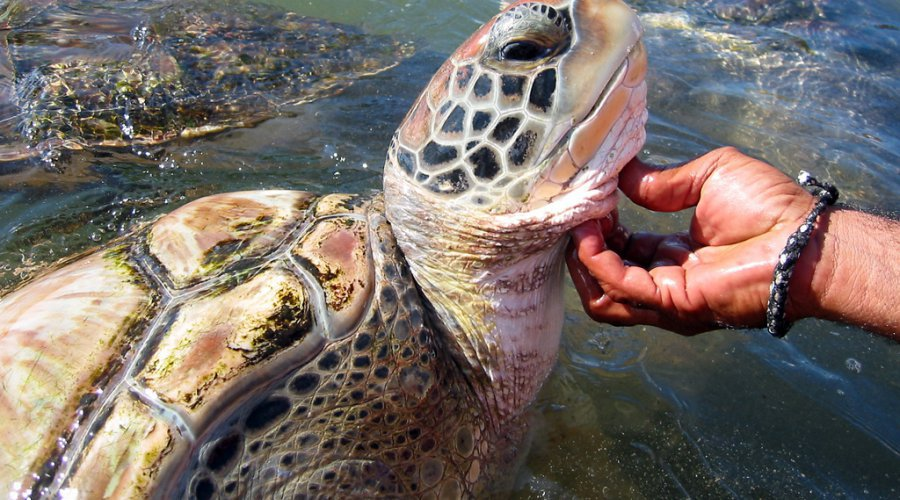

The natural surroundings of Sri Lanka's turtle hatcheries have long
been popular tourist destinations. You wouldn't want to miss the
opportunity to participate in it. Every year, roughly 7000 young
turtles are released back into the ocean in Sri Lanka, where about
400 turtles lay eggs annually. In Sri Lanka, there are several
turtle hatcheries that place a high priority on protecting the
country's marine ecology.
HATCHERIES
Turtle hatcheries are establishments and locations that care
for turtles, shield their young from predators and other dangers,
and make sure the turtle nests are kept and protected. Many turtle species are currently threatened with extinction
or face the possibility of having their hatchlings sold by poachers,
and they are also vulnerable to other external dangers. Since the
hatchlings are released into the sea once they are strong and
healthy, turtle hatcheries safeguard the safety of the turtles and
their eggs. In Sri Lanka, hatcheries are typically found near beaches
where sea turtles congregate to lay their eggs. For educational and research purposes, they keep track of the
number of hatchlings released into the water as well as the success
rates of this. Tourists that visit these hatcheries are also given
this information to help educate them.
VISITING TIPS
Place all garbage and trash in the trash.
Keep your voice down when you're near them.
Avoid using flash when taking pictures of turtles
You can chase away any predators but leave the hatchlings
alone.
Feed them only whats given
Be gentle and cautious when holding the hatchlings

FACTS ABOUT TURTLES
Turtles are among the world's oldest groups of reptiles,
outliving snakes, crocodiles, and alligators!
An actual turtle cannot crawl out of its shell. It is
impossible for them to get too big for the turtle since
its shell expands along with them.
The dinosaur era, which lasted more than 200 million years
ago,
is when these creatures first evolved.
A turtle's shell actually functions as a component of its
skeleton, much like your bones do. The turtle's spine
and rib cage are among
its more than 50 bones.
According to the IUCN, 129 of the 300 turtle and tortoise
species that
are currently found on Earth are either endangered or
severely threatened.
Although many species live in or near water, turtles
breathe
air and lay their eggs on land.